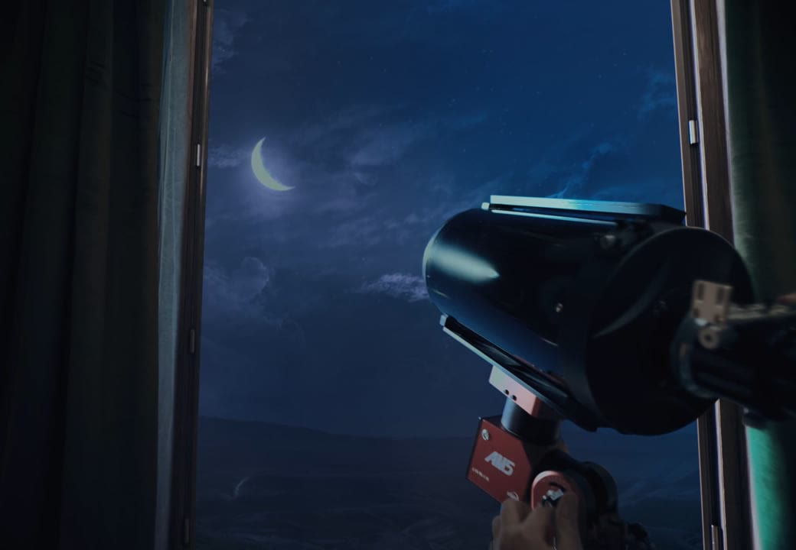
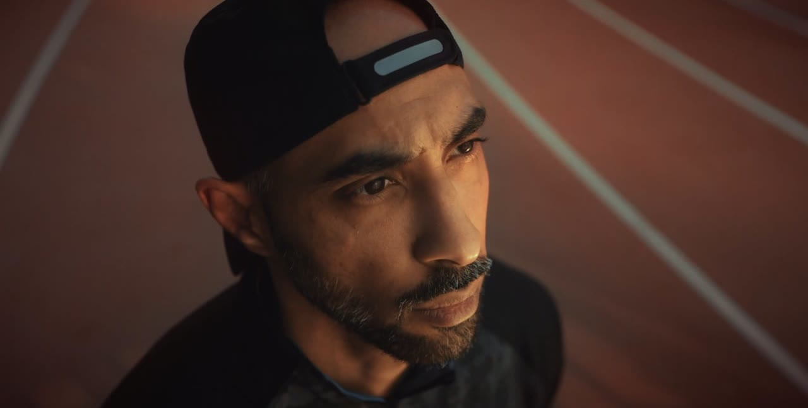
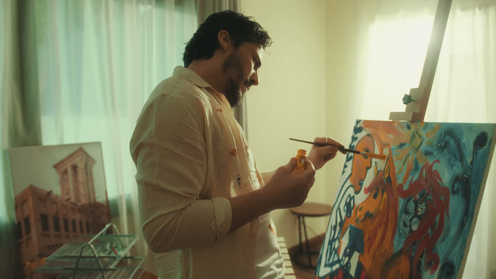
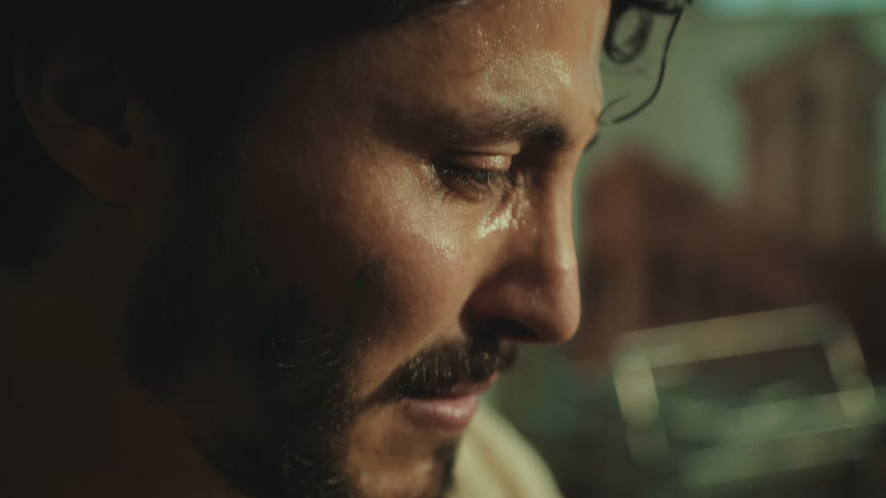
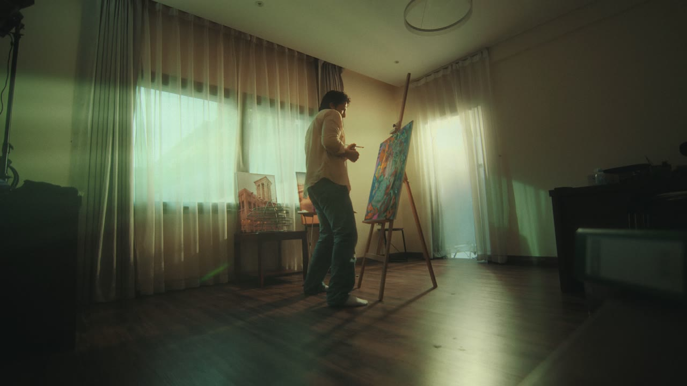
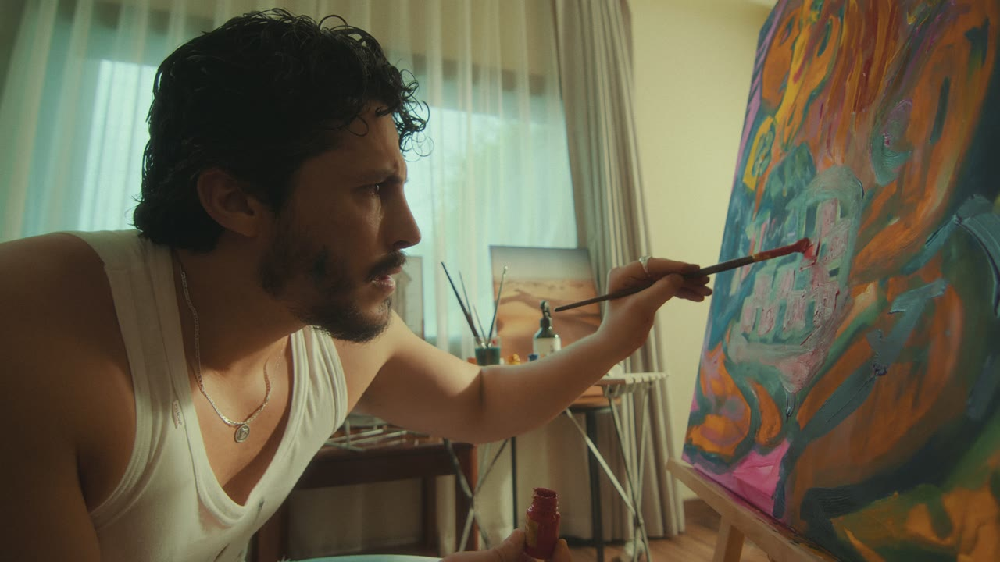

Pick the top you like: reply 1, 2, 3 or 4. Every option has a grainy dark background behind the videos. For the Evil Lady Game picture, reply A, B, C or D (D is on the site now).
1 Classic title · fine still grain
DI Colorist · Editor · Motion graphics · Doha
jaycolle2@gmail.comInstagramVimeo


2 Stacked capitals · moving grain
DI Colorist · Editor · Motion graphics · Doha
jaycolle2@gmail.comInstagramVimeo
3 Lens ring · fine still grain
DI Colorist · Editor · Motion graphics · Doha
jaycolle2@gmail.comInstagramVimeo
4 Film frame · heavier moving grain · warm light
DI Colorist · Editor · Motion graphics · Doha
jaycolle2@gmail.comInstagramVimeo
Evil Lady Game picture



